Description
Details
Theory of Operation
The device is powered using an external 12V power supply. Two high current buffers are created using op amps and BJTs. One of these buffers is simply set to half the supply voltage to create a reference voltage. The other buffer is wired to a DAC which is controlled by an Arduino Nano. There are differential amplifiers which measure the voltage across the DUT, and the current through it using a shunt. These are wired to an ADC which is read by the Arduino Nano. The Arduino Nano facilitates the DUT sweeping process, and it sends data to a plugged in computer. The plugged in computer runs a Python application which issues sweep commands to the Nano and plots the resulting IV data using Matplotlib
Examples
Below is an example 1N4148 diode sweep and a 2N3904 BJT sweep. Short of curve tracing with a different system and doing a comparison, there is not really a good way to verify if these are correct. However, the general shape of the curves does look right. There is clearly some offset error for the red trace of the 2N3904 sweep.
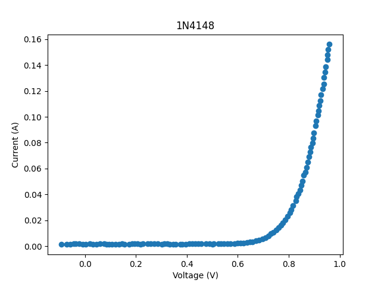
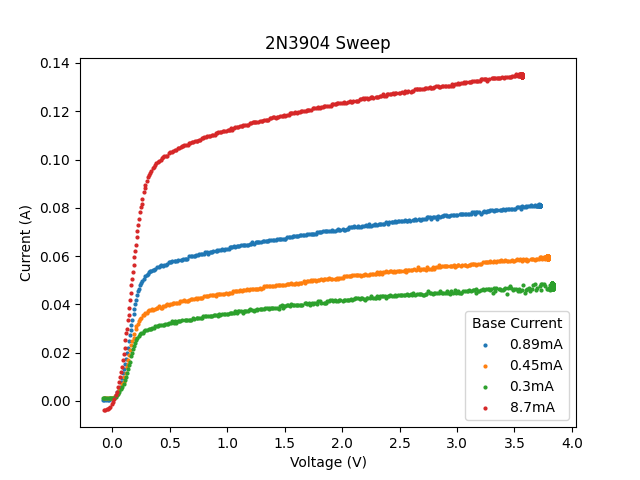
Testing
My main test consists of sweeping a variety of resistor values using the curve tracer and comparing the results to the theoretical curves based on a DMM reading of the resistors. Here are some plots from my latest test:
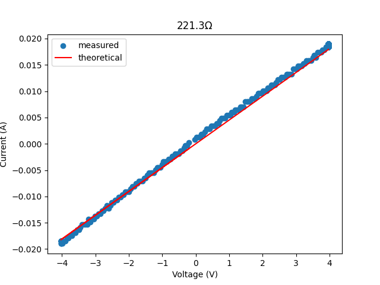
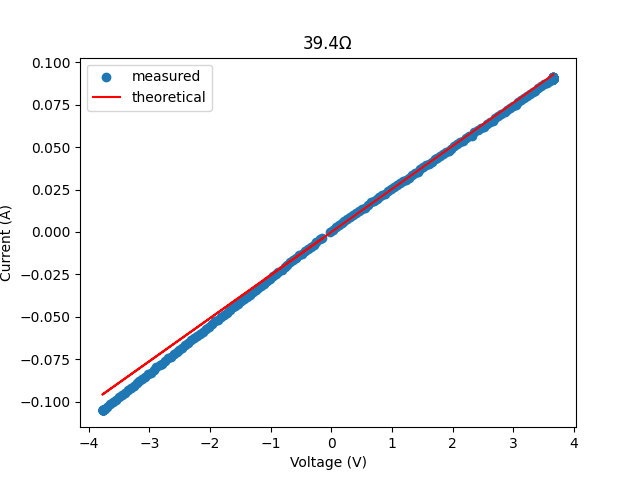
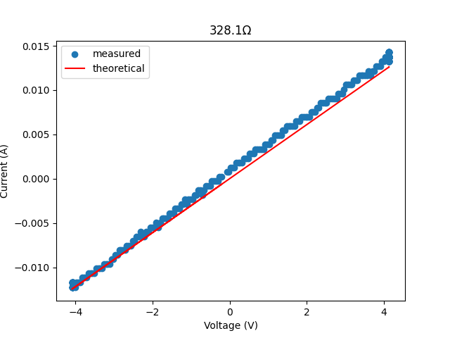
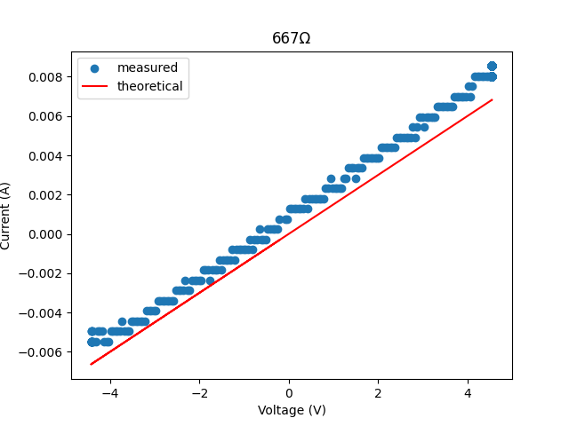
Project Logs
In this test I compare a trace taken by the curve tracer to a trace taken using an AD3 scope, a function generator, and a sense resistor. This is done for the 1N4001 and 1N4148 diodes. The results are shown below. They appear to be pretty close.
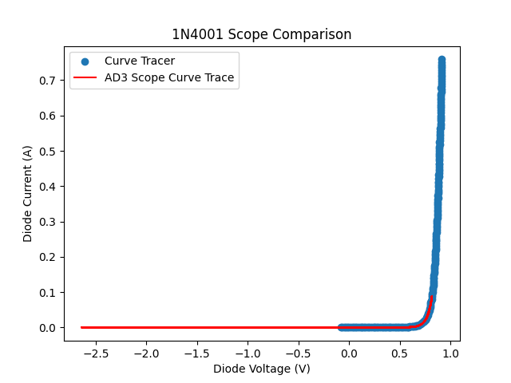
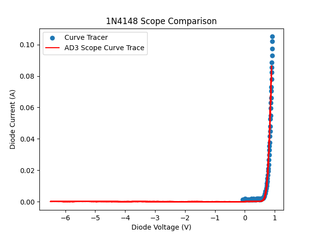
This is a test comparing manual measurements of diode curves to curves captured by the curve tracer. The manual measurements were done by current limiting a power supply and reading out the voltage. As can be observed from the plots, I didn't take many data points. The 1N4001 comparison seems pretty close; however, the 1N4148 has noticeable error. This may just be because the 1N4148 is zoomed in more.
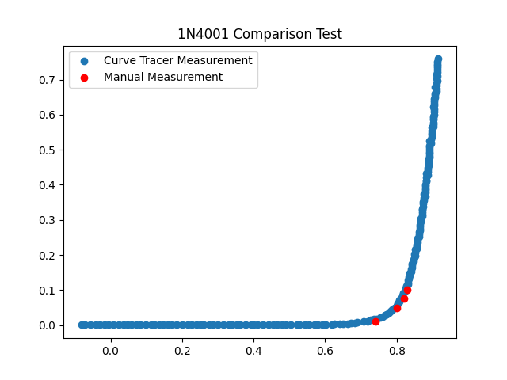
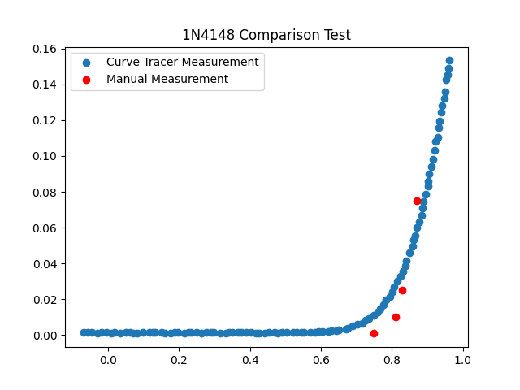
The circuit board is mounted in an enclosure with stand offs. The screw terminal connections are run to banana connectors.
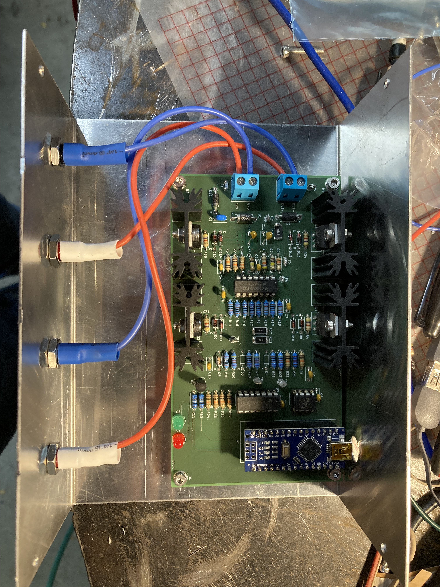